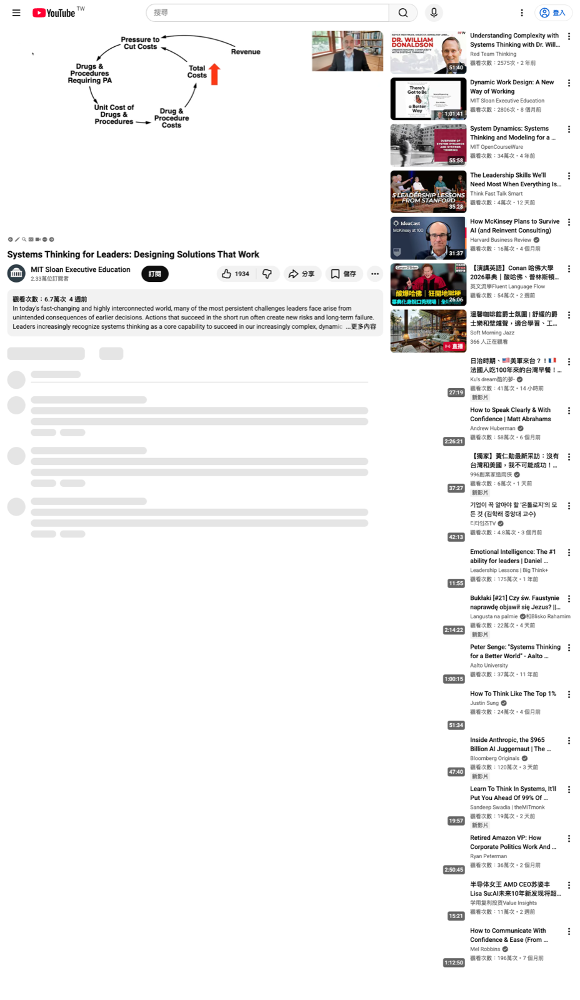

這支影片在講什麼
John Sterman 的主張很直接：複雜系統不會照線性流程回應管理者。你推出政策，系統會改變；系統改變後產生新的資訊、誘因與反應，下一輪決策也被改寫。Systems thinking 的價值，是把這些回饋路徑攤開，讓領導者在下決策前先看見可能的反作用。
Policy resistance：政策有效，問題稍後回來
Sterman 把 systems thinking 從口號拉回工具。他承認「世界很複雜」是真的，但這句話對決策幫助有限。真正要抓的是 policy resistance：一個方案短期改善指標，之後透過延遲回饋讓問題回到其他位置，甚至比原本更嚴重。
then it either doesn't work or more commonly and insidiously it works in the near term over here, but the problem comes back a little later over there — John Sterman, 03:52–04:08
- 交通壅塞時加蓋道路，短期降低壅塞，長期吸引更多開車需求。
- 醫療控費限制昂貴程序，短期壓低單位成本，長期可能增加急診、住院與行政成本。
- 專案落後時加壓與加班，短期拉高產出，長期增加疲勞、缺陷與重工。
Open-loop mental model 會漏掉系統回應
常見管理流程把問題切成線性步驟：定義問題、蒐集資料、評估方案、選擇最佳選項、執行。Sterman 說，真實專案很少這樣運作。人會在過程中發現問題定義錯了、資料不足、假設失準，於是重回前一步。
他用騎腳踏車說明 feedback：你要知道自己偏左或偏右，才知道該怎麼轉把手。企業與公共政策更難，因為系統中有員工、客戶、供應商、資本市場、社群與監管者，各自有目標，也會回應你的決策。
醫療控費案例：prior approval 的反噬路徑
美國醫療保險常用 prior approval、preferred drug lists、step therapy 控制昂貴藥物、檢查與程序。表面模型很合理：成本上升帶來控費壓力，保險方收緊審批，單位成本下降，總成本也該下降。這是水面上的 balancing loop。

問題在水面下。照護延遲或不適切會讓病情惡化，病人回診、急診、住院與再入院增加；醫師 appeal 增加行政成本；病人不滿可能降低續保與收入。這些 reinforcing loops 會把成本推回來，還讓管理者更想加強原本的限制。
專案 simulator：趕工迴圈如何毀掉品質
第二個案例是 project management simulator。Sterman 示範一個硬體開發專案：前期縮人力、接受 scope creep、重疊設計階段；落後後再加壓、加班、晚期補人、要求更多 overlap。這些動作符合許多組織的直覺反應。
| 管理反應 | 短期效果 | 延遲反作用 |
|---|---|---|
| 加班與進度壓力 | 可見產出上升 | 疲勞、錯誤、重工增加 |
| 晚期補人 | 人力數字上升 | 溝通成本與 onboarding 負荷上升 |
| 接受 scope creep | 市場想像值提高 | 設計複雜度與變更傳播增加 |
| 重疊工作 | 時程看似縮短 | 前置假設錯誤時，後段重工擴大 |
管理 simulator 的學習機制
Sterman 不主張 simulator 直接告訴管理者最佳答案。原因很現實：錯誤 mental model 通常被日常經驗強化，外部專家直接給答案，只會讓人反駁模型太簡單、太複雜、太黑箱，或不了解現場。
you can't tell people they have to learn it by doing it in the safe space that the simulator provides — John Sterman, 47:02–47:13
管理 simulator 的價值，是把失敗成本轉移到安全環境。人可以在模擬中破產、延誤、品質崩壞，再回頭檢查哪個假設造成反噬。這和飛行模擬器類似：飛行員要先練引擎故障、鳥擊、儀表失效，不能等真實事故發生才學。
不用正式 simulator，也能先做 causal mapping
Sterman 強調，很多問題不必先建正式 simulation model。Qualitative causal mapping 就能創造價值：把 actor、誘因、資訊、延遲、反作用畫出來，再讓系統中的人一起檢查。
you want the system in the room — John Sterman, 52:50–52:55
這對研發與製程導入很實用。若只讓決策核心圈討論，很容易漏掉檢驗、供應商、機台條件、客戶現場、治具磨耗、規格變更與重工路徑。把這些 actor 放進 causal map，能比單純甘特圖更早看見風險。
給研發管理的操作清單
- 先寫出方案的 intended effect，避免只用抽象目標描述。
- 列出至少兩條 delayed feedback path：成本、品質、工時、重工、客訴、供應鏈。
- 找出短期會美化指標、長期會反噬的行為，例如加班、晚期補人、壓縮驗證。
- 把受影響 actor 放進建模流程，包含前線、檢驗、供應商、客戶現場與反對者。
- 高 stakes 決策先用 simulator、小批量試驗或可逆 pilot 驗證。